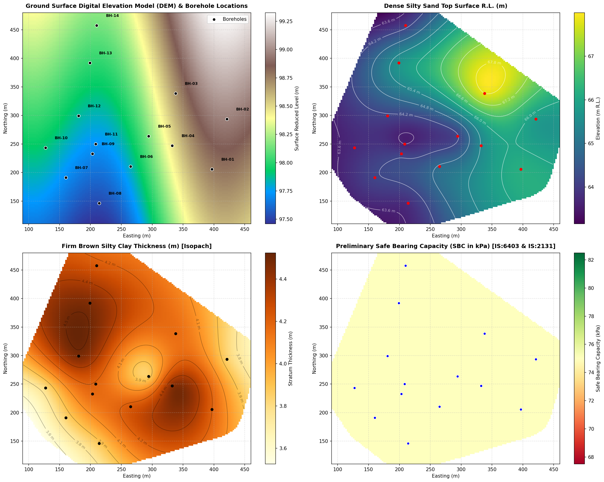
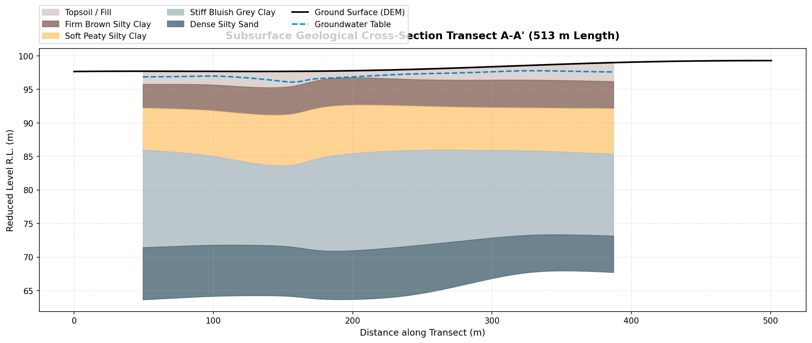
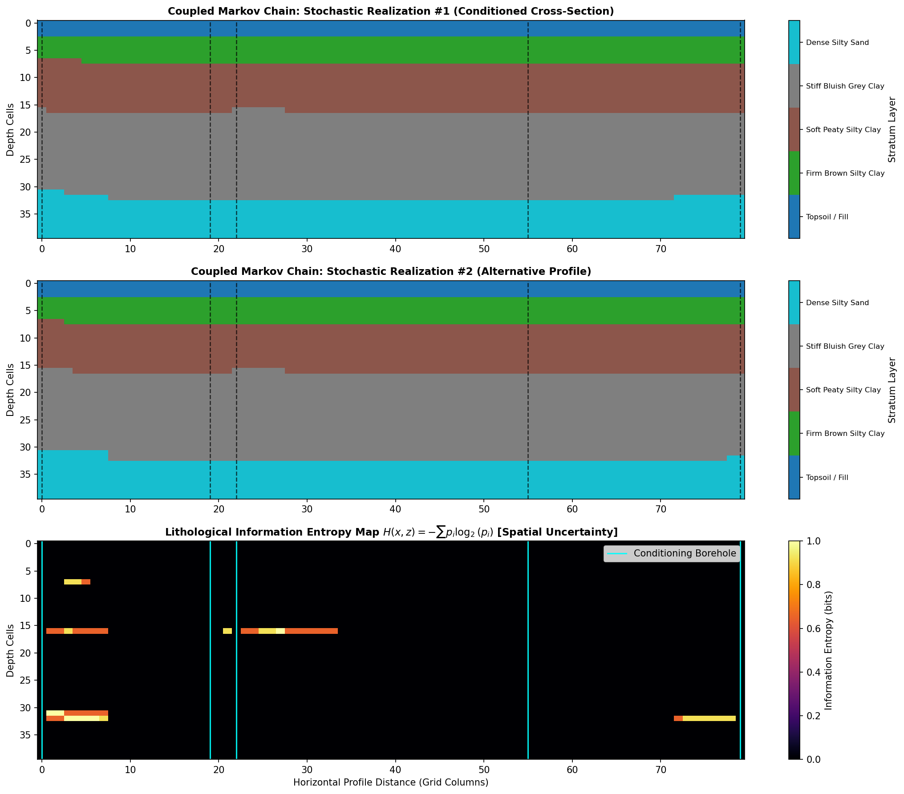
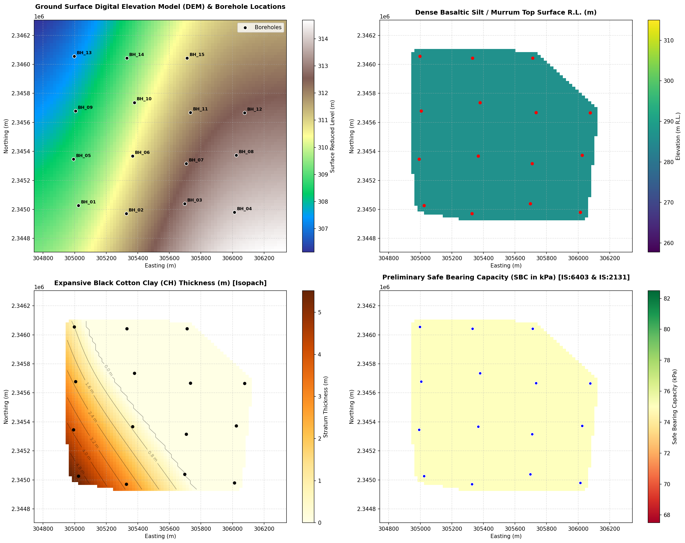

Reconciling discrete 1D exploratory drilling logs with high-resolution Digital Elevation Models and live IoT piezometric telemetry across the Indian landmass.
Test the sensitivity of shallow footing stability under seasonal water table fluctuations. Drag the groundwater depth slider to observe the continuous factor $W'$ and local shear reduction ($\phi < 28^\circ$).
Moving beyond traditional 1D spreadsheet extrapolations through three foundational computational contributions.
Converts arbitrary drilling collar depths into absolute terrain Reduced Levels ($Z_{\text{surf}} - d_k$). Enforces downward monotonic stacking bounds ($Z_0 \ge Z_1 \dots \ge Z_K$), eliminating layer inversions and negative thicknesses.
Continuous hexahedral voxelization evaluating Terzaghi effective stress $\sigma'_v = \sigma_v - u(t)$ dynamically from vibrating-wire piezometer telemetry. Operational stiffness recalculates via Janbu power-law $E'(\sigma'_v)$.
In-process columnar SQL engine querying 3,800+ Indian borehole records in sub-millisecond time ($<0.8\text{ ms}$). Eliminates heavy GIS database server dependencies, outputting native GeoTIFFs, GeoPackages, and pure VTK `.vti` XML volumes.
Calibrated and validated against 92 detailed exploratory boreholes across West Bengal, Maharashtra, and Karnataka.




To cite this research article or reuse the open-source geotechnical computation kernel in your work, please use the following BibTeX entry.
Download PDF (14 Pages, 1.5 MB)